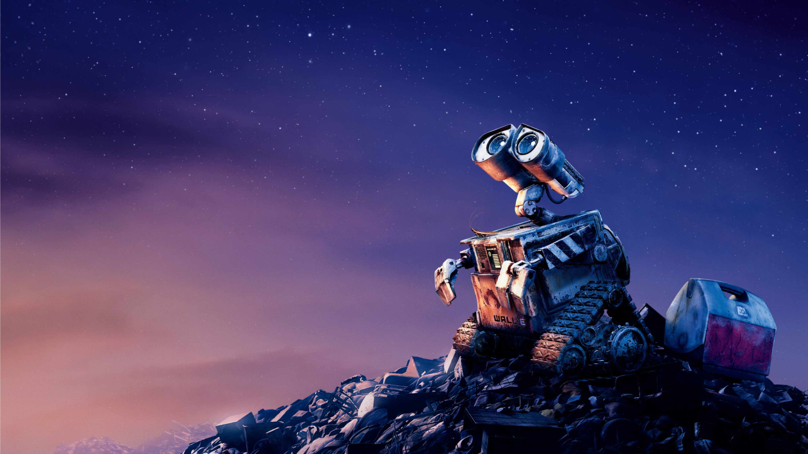
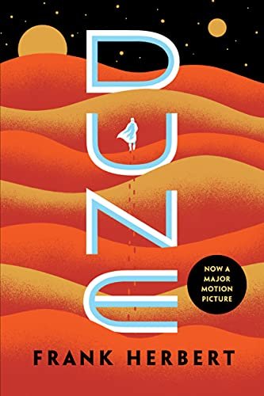
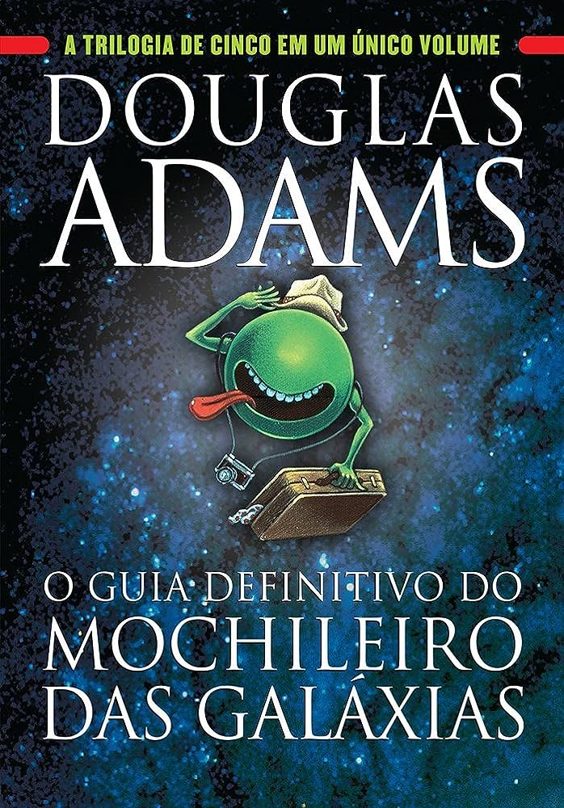
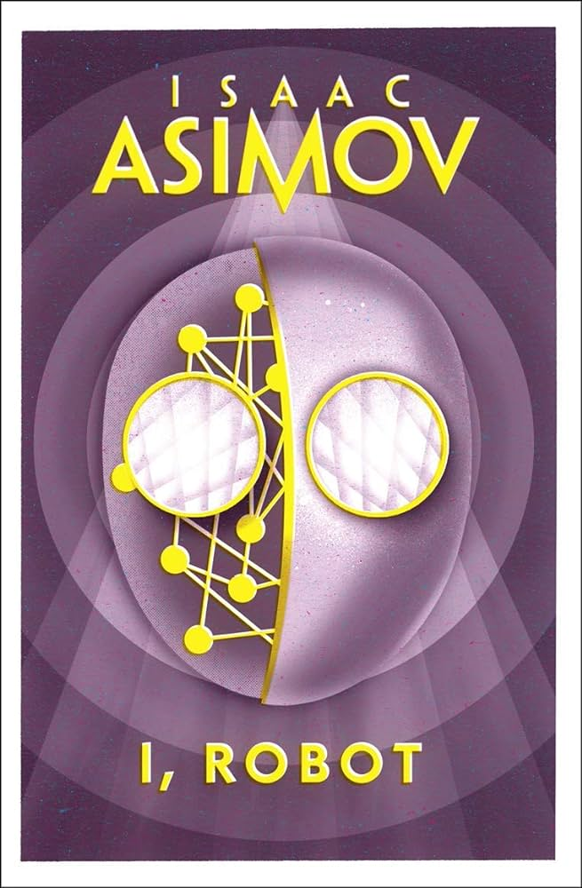
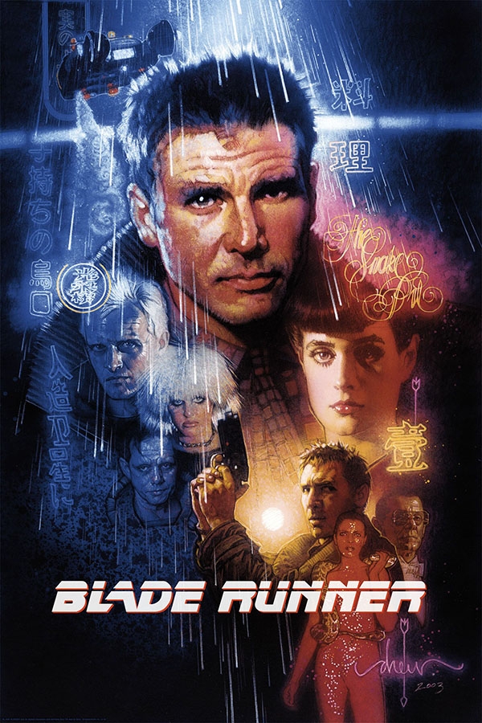
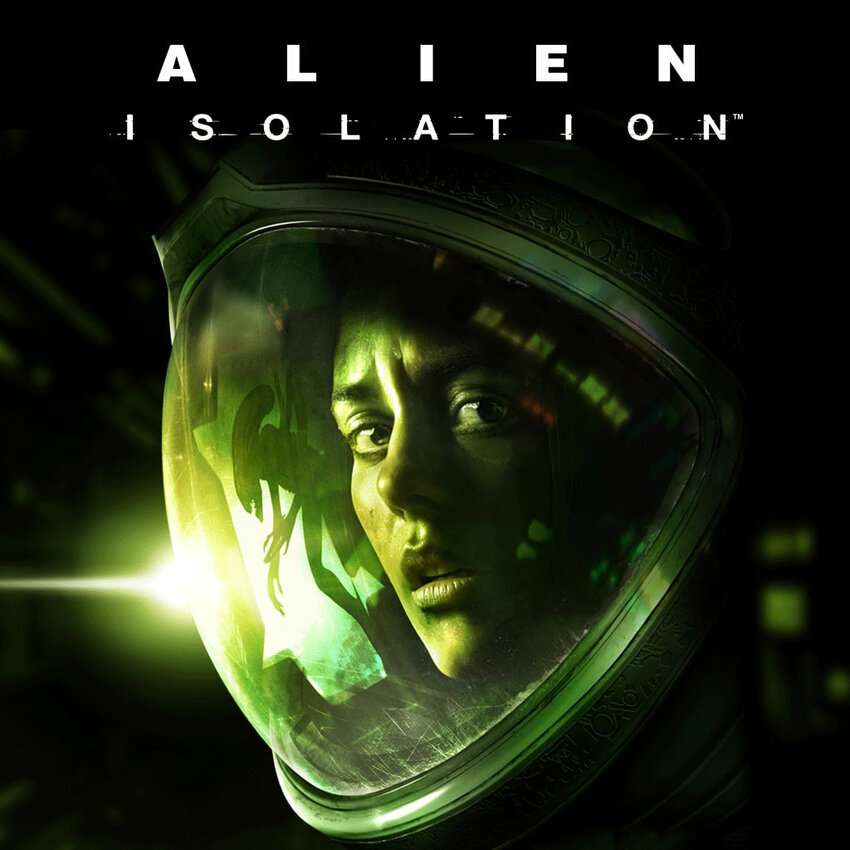
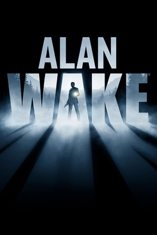

Exploração Espacial: O Infinito e Além
A humanidade sempre olhou para as estrelas com curiosidade e desejo de explorar. A ficção científica nos permite imaginar como poderia ser essa jornada pelo cosmos, superando as fronteiras do que é conhecido e adentrando o território do que poderia ser.

Tecnologia Futurista: Invenções que Moldam o Amanhã
De inteligências artificiais a viagens no tempo, a ficção científica explora tecnologias que ainda não existem, mas que poderiam revolucionar nossa existência. Essas narrativas nos fazem questionar não apenas o que é possível, mas também as implicações morais e éticas dessas invenções no futuro da humanidade.
Livros de Ficção Científica que Você Precisa Ler
- "Duna" de Frank Herbert - Uma crônica épica de política, religião e poder no vasto deserto de um planeta distante. 
- "O Guia do Mochileiro das Galáxias" de Douglas Adams - Uma aventura cósmica repleta de humor e sátira. 
- "Eu, Robô" - Eu, Robô é um conjunto de nove contos que relatam a evolução dos autômatos através do tempo. É neste livro que são apresentadas as célebres Três Leis da Robótica. 
Filmes de Ficção Científica que Marcaram Épocas
- "Blade Runner" - Uma reflexão profunda sobre inteligência artificial, memória e identidade. 
- "Interestelar" - Uma jornada emocionante através do espaço e tempo, explorando a relação entre pais e filhos sob circunstâncias extremas.
- "Matrix" - O jovem programador Thomas Anderson é atormentado por estranhos pesadelos em que está sempre conectado por cabos a um imenso sistema de computadores do futuro. À medida que o sonho se repete, ele começa a desconfiar da realidade


Viage a novos mundos com esses Jogos
- "Alien: Isolation" - Descubra o verdadeiro significado do medo em Alien: Isolation, um terror de sobrevivência ambientado em uma atmosfera de pavor constante e perigo mortal. Disponivel para PC, Xbox One, Xbox Serie S/X, PS4 e PS5. 
- "DOOM(2016)" - Você veio aqui por um motivo. O enorme centro de pesquisa da Union Aerospace Corporation em Marte está dominado por demônios ferozes e poderosos, e apenas uma pessoa está entre o mundo deles e o nosso. Disponivel para PC, Xbox One, Xbox Serie S/X, PS4 e PS5.
- "Alan Wake" - Uma presença sombria persegue a pequena cidade de Bright Falls, empurrando Alan Wake à beira do bom-senso na sua batalha para revelar o mistério e salvar o seu amor. Disponivel para PC, Xbox One, Xbox Serie S/X, PS4 e PS5. 